I'm currently a senior studying Electrical and Computer Engineering at Cornell University, where I am lucky to be advised by Prof. Zhiru Zhang and Prof. Mohamed Abdelfattah. Outside of work, I enjoy playing ping pong, board games, and soccer, as well as baking and music (I play percussion). I'm also a big reader so feel free to reach out if you have recommendations!
My research focuses on computer architecture and efficient computing. I'm interested in how computational models, architectures, and physical implementations shape one another, especially for brain-inspired and adaptive systems. I work on specialized hardware and tools that make these systems easier to generate, evaluate, and implement.
Research & Projects
Allo-Assisted ASIC Harness (AAAH)
Zhang Research Group · Cornell University
I extended Allo to generate hierarchical ASIC implementations using information from its intermediate representation. The flow groups processing elements by function and connectivity, physically implements one representative from each group, and tiles the resulting macros automatically. On a 16 × 16 matrix-multiplication array, it reduced place-and-route runtime by more than 4× and peak memory use by over half; it also completed a 32 × 32 design that exhausted memory in a conventional flat flow.
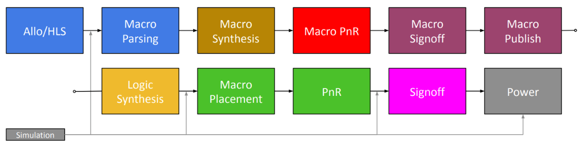
Hierarchical ASIC implementation flow.
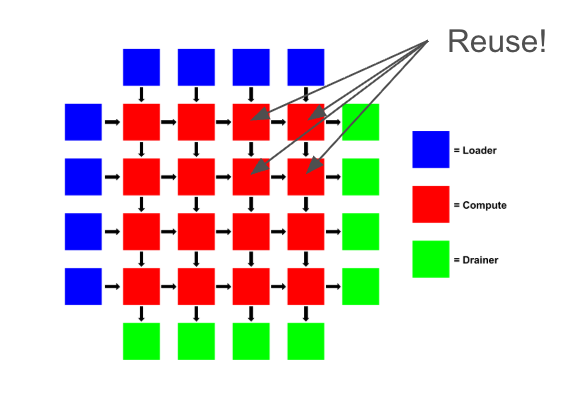
Processing-element reuse across a spatial array.
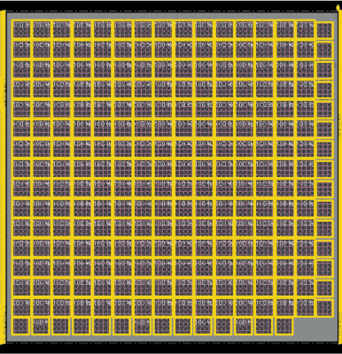
Physical design of a 16 × 16 processing-element array.
Double Duty: FPGA Logic Block Architecture
Abdelfattah Lab · Cornell Tech
Double Duty modifies FPGA logic blocks so that lookup tables and adder chains can operate independently and concurrently. For the journal extension, I analyzed input utilization and developed four input-sharing variants that reduce the architecture's added routing hardware while trading off area, timing, and packing flexibility. The full architecture improved area-delay product by 9.7% on average across three benchmark suites. Paper
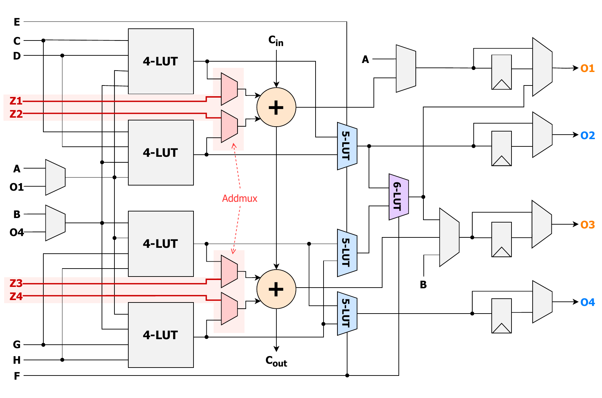
Arithmetic logic module with added shared inputs.
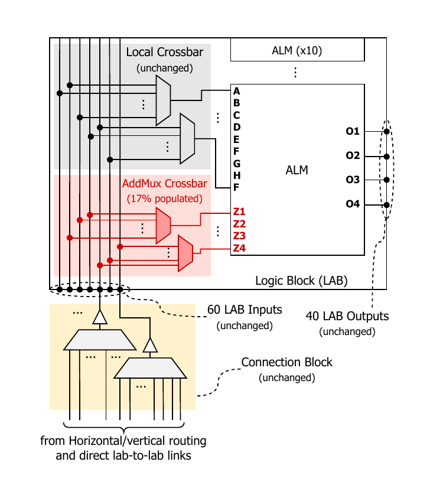
Local crossbar extension for the additional inputs.
Microemboli Detection with Transcranial Doppler
Abdelfattah Lab · Cornell Tech / Weill Cornell Medicine
I helped launch a collaboration with Weill Cornell Medicine to develop a portable transcranial Doppler system for automatically detecting emboli. I built a parameterized signal-processing pipeline for raw ultrasound echoes and a simulation framework that models blood flow, scatterer motion, and echo generation. The synthetic data provided a way to test the pipeline before patient data was available and demonstrated that it could distinguish simulated embolic events from noise.
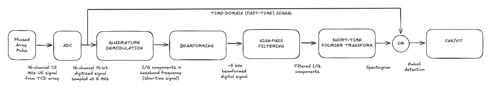
Signal-processing pipeline from acquisition through emboli detection.
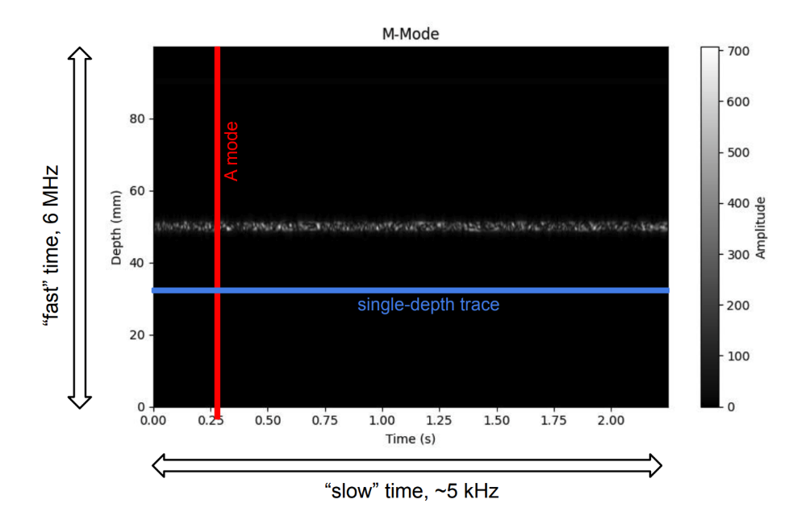
A-mode trace extracted from simulated M-mode data.
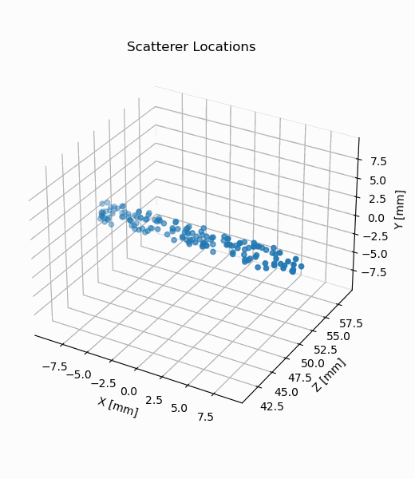
Simulated scatterer motion used to generate ultrasound echoes.
Spiking Neural Network ASIC
ECE 6745 · Cornell University
I co-designed a hardware-friendly leaky integrate-and-fire neuron model and a programmable accelerator for spiking neural network inference. I later expanded the project into a framework that generates networks, controllers, memory interfaces, randomized tests, and hierarchical ASIC layouts from a small set of parameters. We taped out a two-layer, eight-neuron design in TSMC 180 nm and trained a hardware-aware N-MNIST classifier to evaluate the system.
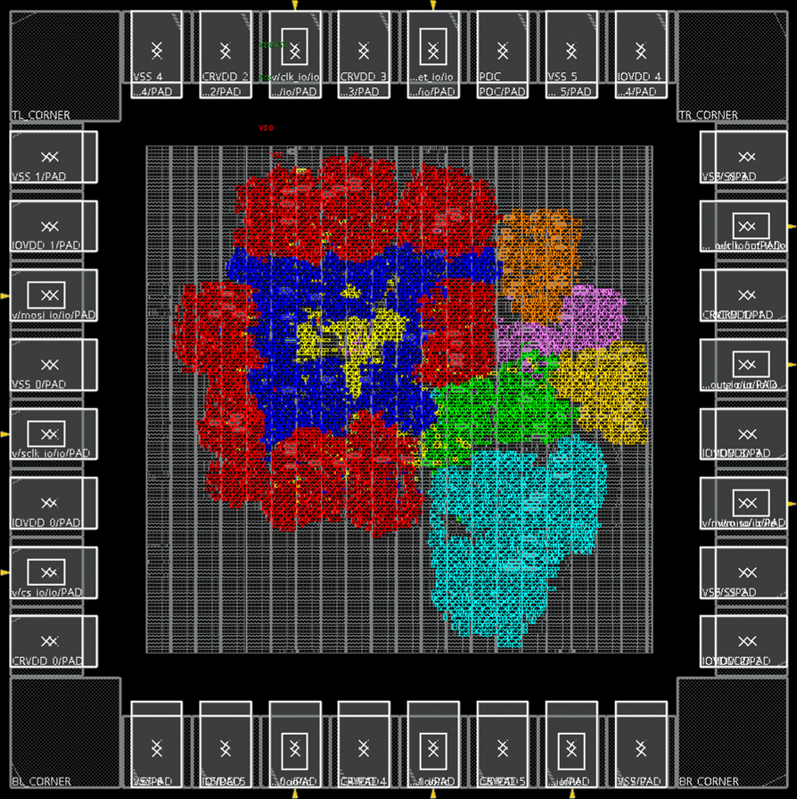
Tapeout chip placement in Innovus, colored by subsystem.
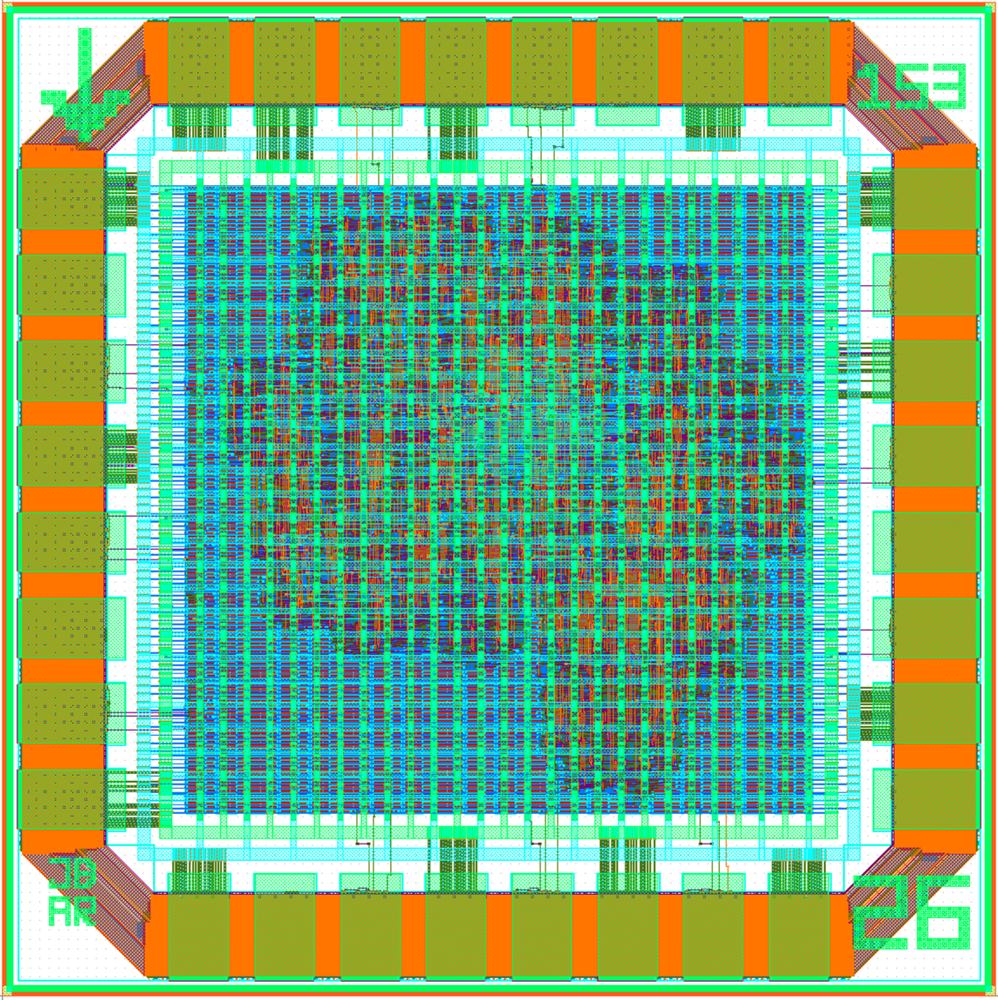
Final chip layout and pad ring in KLayout.
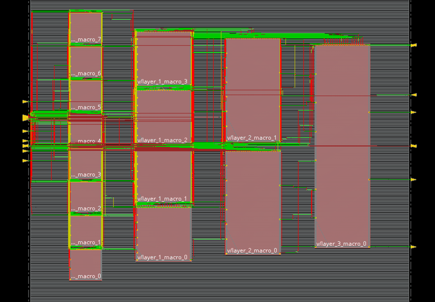
Top-level placement and routing of a generated network using hierarchical layer macros.
Publications
FPGA Architectures to Enable Concurrent LUT and Adder Chain Usage.
X. Dai, J. Pun, A. Y. Fei, J. Bushlow, G. Zgheib, M. A. Iyer, M. Eldafrawy, A. Boutros, V. Betz, and M. S. Abdelfattah. ACM Transactions on Reconfigurable Technology and Systems (TRETS), 2026. [paper]
Teaching
ECE 3100 — Introduction to Probability · Teaching Assistant, 2026 · Led a weekly discussion section and wrote class reference solutions.
ECE 2100 — Introduction to Circuits · Teaching Assistant, 2025 · Supported laboratory sessions, discussion sections, and office hours.
Honors & Awards
Tau Beta Pi · Cornell Engineering
Eta Kappa Nu · IEEE honor society
Best Project/Presentation · CS 4782 SpikeGPT project